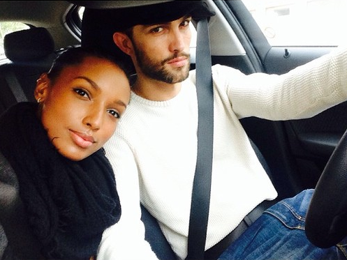

Athlone is a young man whose background gives him unique insight on sociological and cultural changes that are happening today.


Having already discussed the means through which black males can increase their chances of dating non-black women, I thought I would also touch on the subject of white males approaching non-white women. In this case, I want to focus specifically on those seeking to draw the attention of black females as the topic doesn’t come up much in the manosphere.
Interest in black female and white male pairings does exist in the US. ABC’s hit show Scandal has shown that there is an openness to white male/black female partnerships among black women, and more than a few relatively high-value white men have shown a willingness to approach and date black women.
So, what is important for a white American male to remember if interested in approaching a typical black American female in the USA? Here are a few things:
There are a decent number of non-black men out there who are interested in black women primarily as a means to an end. A hot black girl is something for them to “try out” before they settle down, or something to sample and cross off their bucket list in due time. Very few white men have actually been with black girls in the USA (this particular interracial pairing is not one of the most common and is substantially less prevalent than its reverse), so when they do meet a black female they find attractive the urge to simply “test it out” for novelty’s sake does appear on occasion.
Black women are very keenly aware of the existence of this mentality, and they don’t want any part of it. They’re usually not going to be comfortable with the idea of being an experiment for a random horny guy. When approaching these women, it is important that you distance yourself from this as much as you can. Social circle game can be valuable here, just as it is for black men looking to date interracially (as I noted a little while back).
By building strong friendships with people of multiple backgrounds and winning social proof among multiple groups, you can improve your chances of gaining romantic interest from a diverse group of women. If a black woman can see that you’re cool to her peers and with other minorities, she may be more open to you romantically and less prone to conclude that you’re just knocking the “black girl thing” off of your “to-do list”. She will want to be treated like any other girl.
In a previous article discussing ways in which black men can broaden their romantic options, I noted that black males with diverse friend groups and social proof were far more likely to find non-black female suitors on a consistent basis than others.
A similar truth applies with regard to black women. Those most open to dating interracially are going to tend to be the ones open to maintaining close interracial relationships of other kinds. If her close friend group is diverse and includes many whites, there’s a decent chance that she may be willing to consider whites romantically as well. Keep in mind that your typical black American woman puts a high priority on traits like “swagger” that, more often than not, she (and American society in general) will associate with black men and assume to be absent in any white man she meets.
If you’re a white male and you do not have anything approximating this “swagger” (more on this later), then you’re better off approaching the kind of black women who put less of a premium on it. Educated black girls with diverse friend groups tend to be the most likely to fit in this group, as are girls of mixed racial heritage (generally still regarded as “black” in American society). If she doesn’t associate extensively with white people, don’t expect her to buck that trend in her romantic life. It can be done, but your chances are much lower.
As I noted briefly above, your typical black American woman puts a high priority on traits like “swagger” that, more often than not, she (and American society in general) will associate with black men and assume to be absent in any white man she meets. This can be a barrier to many relationships between black women and white men:
4 out of 6 women also said they were simply not attracted to white men. They felt as if they lacked good looks that they were used to, as well as confidence (swag) and sex appeal. Because of this it was hard for most of them to really become serious about potentially being able to have a serious relationship with a white man.
This is where the value of “contrast game” becomes clear. If you examine my previous article regarding black men and the steps they can take to broaden their non-black romantic options, you’ll see that I touched on this issue a couple of times:
As noted above, pre-selection will often be essential to a black male’s success dating interracially in the USA. In order to make this possible, however, it is crucial for a black male to avoid association with any number of negative stereotypes associated with people like himself.
The reality is this: thugs aren’t actually cool. Any notion contrary to that is a myth. Only a select minority of non-black women are really into thugs. Most truly want nothing to do with that image or lifestyle. It is crucial to the success of any black male looking to bridge racial divides in his romantic life to avoid association with that image at all costs.
In reality, this is just contrast game. One is simply acknowledging the presence of a stereotype with potentially negative effects on their social/romantic life, understanding that he will generally be assumed to be in line with that stereotype, and working to directly contrast with said stereotype when given the chance to actually engage with those who are likely to hold that assumption.
Black men benefit from this kind of “contrast game” when approaching non-black women. Similarly, white men will benefit from creating a contrast as well when they approach black women. How?
Develop a little swagger. Make sure your game is on point (that is what this website is for, isn’t it?) and work to ensure that your confidence shows. Get very comfortable approaching with that confidence. Black men are famous for fearless, persistent approaching — though they claim to often be annoyed by this, the fact is that said reality has conditioned many black American women to expect a man to be confident enough to step to them. There is very little tolerance in the black community for shy guys, far less than you will find in other groups.
Learn to dance, an act that will benefit you with any girl, really. Combine these suggestions with the maintenance of a diverse friend group that I suggested above (an act that will stand out and aid contrast game in and of itself) and you’ll have a fighting chance.
A lot of black women (though not all, as noted above) who are approached by white males are expecting a nice but “corny” guy with none of the swagger that she’s come to appreciate in a man. Surprise her and good things will happen.

Black American woman are substantially less likely to date interracially than their counterparts in other parts of the world:
The study predicts that if current trends continue, some ethnic minorities may disappear as people from mixed race backgrounds become increasingly common.
Ethnicity and Family: Relationships Within and Between Ethnic Groups was commissioned by the Equality and Human Rights Commission (EHRC), which grew out of the former Commission for Race Equality.
It shows some ethnic groups are much more likely to have mixed-race relationships.Figures show 48 percent of Black Caribbean men and 34 percent of Black Caribbean women are in mixed-race relationships.
Rates of interracial dating among black Americans are substantially lower than this:
Based on the latest census data, the study showed record highs: 26 percent of Hispanics, 31 percent of Asians, 16 percent of Blacks and nine percent of Whites all married outside their race…
…”In 2008, 22 percent of all black male newlyweds married a non-black,” said Taylor.
…Only 9 percent of black women, on the other hand, married outside their race, making them the least likely of any race or gender to marry outside their race and the least likely to get married at all.
Relationships between blacks and whites are more tolerable in other parts of the Anglosphere (including the UK) than they are in much of the USA. If your goal is to meet an interested black woman as a white male, you may increase your chances of doing so by looking internationally.
The value of interracial dating is in the choice it provides those who partake in it. The ability to transcend ethnic/racial boundaries allows for an increase in the number of potentially compatible romantic options, and thus an increase in the chances of a given individual obtaining satisfaction in their own romantic lives.
Any young male concerned with self-improvement should make the development of this transcendent ability a top priority. The tips above won’t always win you the day, but you’ll be much better off with them than without.
Read Next: Are White Women The Greatest Threat To Successful Black Men?
{kind=link}
{kind=link}
{kind=link}
{kind=link}
{kind=link}
{kind=link}
{kind=link}
{kind=link}
{kind=link}
{kind=link}
{kind=link}